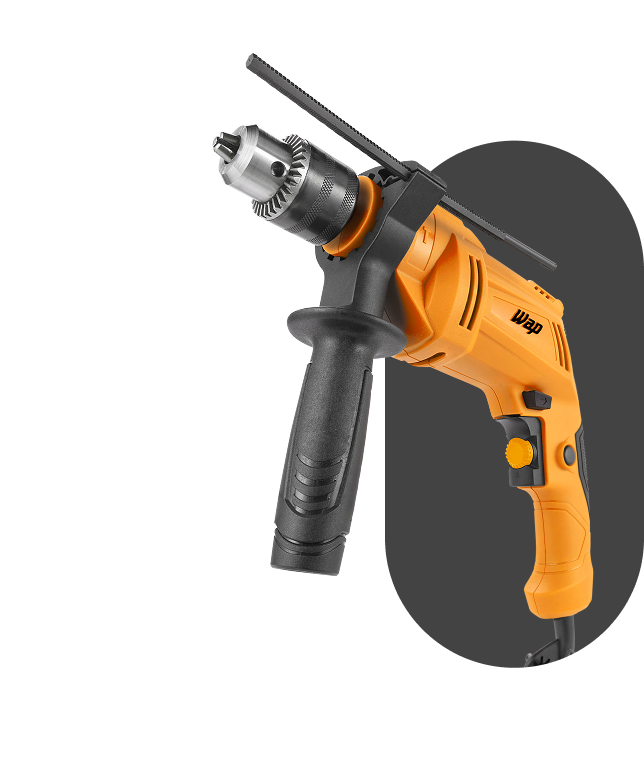
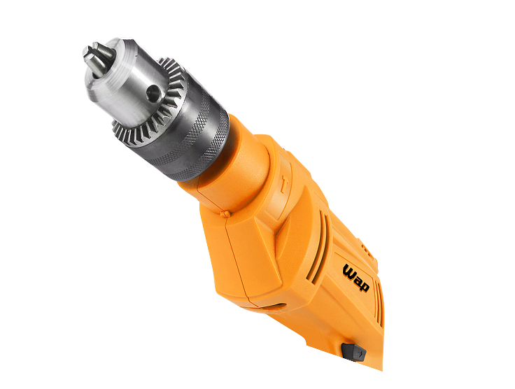
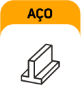
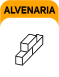
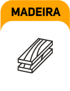
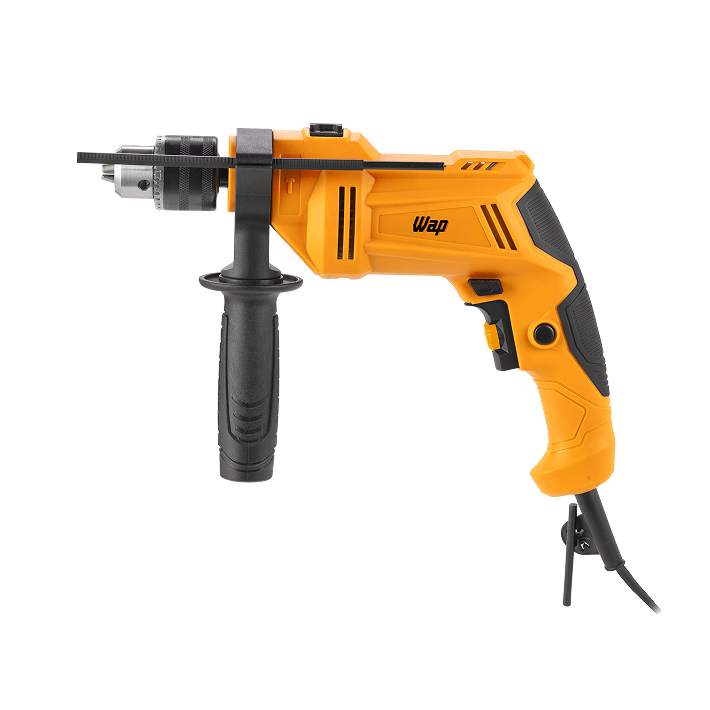
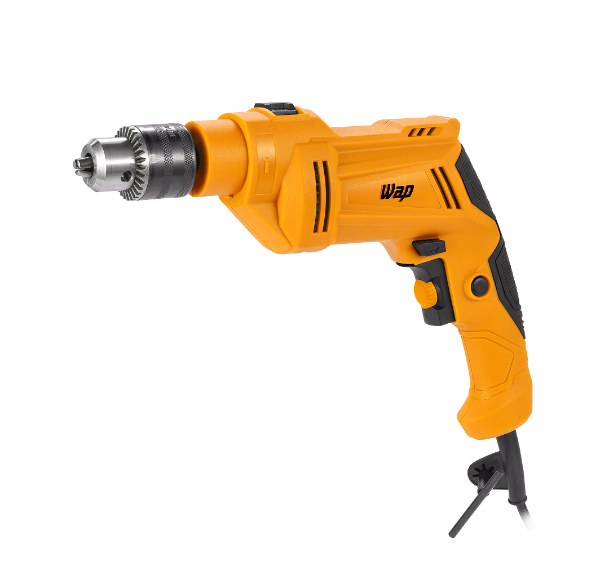
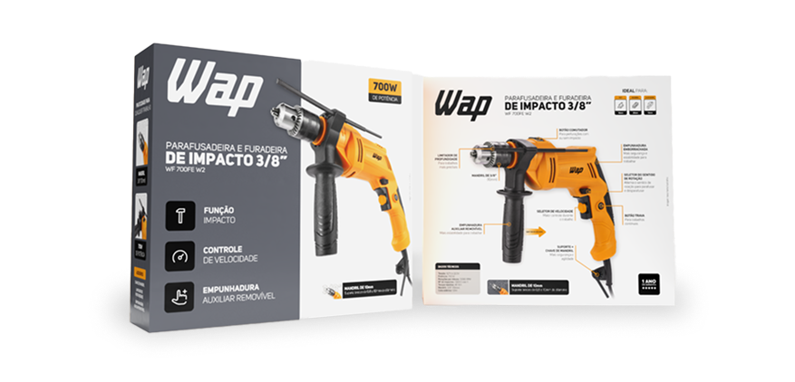

★
★
★
★
★
(6) Clique e
veja!
Otimize o tempo da faxina com o robô aspirador WAP ROBOT W90!
Ref: FW009026 Ver descrição completa

PARAFUSADEIRA E FURADEIRA DE IMPACTO
WF 700FE W2
Transforme construções, montagens e instalações com robustez
Para os que procuram potência e precisão em um só produto, ela combina 700W de potência e 40Nm de torque para elevar o status dos projetos do dia a dia a um novo nível.
Força e estabilidade total
Perfure com mais facilidade, precisão e conforto! A função impacto adiciona impactos simultâneos, facilitando a perfuração até em materiais rígidos e difíceis, como concreto e alvenaria. Para ter ainda mais controle, a empunhadura auxiliar removível garante estabilidade e proporciona um manuseio mais confortável, tornando cada trabalho mais seguro.

auxiliar removível

Mais agilidade e força
A parafusadeira e furadeira WAP conta com diferentes níveis de velocidade, permitindo ajustar a potência conforme a necessidade. Isso garante mais precisão em acabamentos e força extra para perfurações e fixações mais exigentes, para um acabamento de qualidade com menos esforço.
Capacidade de perfuração:

10mm

20mm

13mm
Mais agilidade e força
A parafusadeira e furadeira WAP conta com diferentes níveis de velocidade, permitindo ajustar a potência conforme a necessidade. Isso garante mais precisão em acabamentos e força extra para perfurações e fixações mais exigentes, para um acabamento de qualidade com menos esforço.
10mm
20mm
13mm

Regule a profundidade dos furos, evitando acidentes, com o limitador de profundidade.
O mandril de 3/8" (10mm) suporte brocas e bits de 0,8 a 10mm, oferecendo excelente capacidade de perfuração.
A empunhadura auxiliar removível torna os trabalhos mais estáveis e seguros, para maior confiança durante perfurações.
A empunhadura emborrachada ergonômica oferece mais conforto e controle durante o uso.
Durante as atividades, o suporte e a chave de mandril promovem organização e agilidade ao usuário.
DOS PROJETOS MAIS SIMPLES
AOS MAIS DESAFIADORES

Controle total nas suas mãos
Com a Parafusadeira WF 700FE W2 o controle está nas suas mãos! Você controla a velocidade, sentido de rotação, função com e sem impacto e dispensa o acionamento do gatilho em usos contínuos com o botão trava. Garanta adaptabilidade total da ferramenta à sua necessidade.
